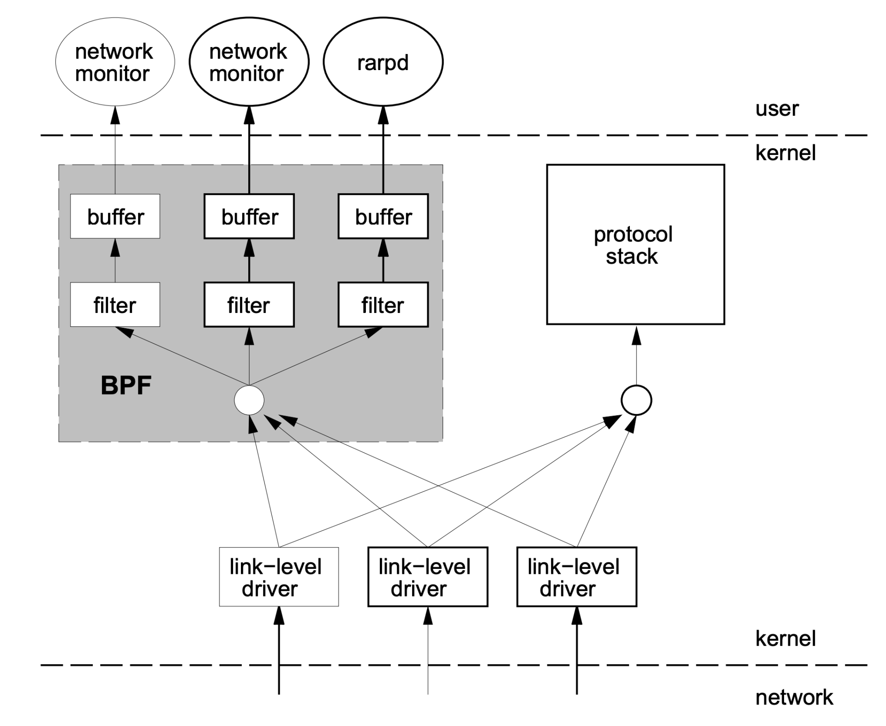
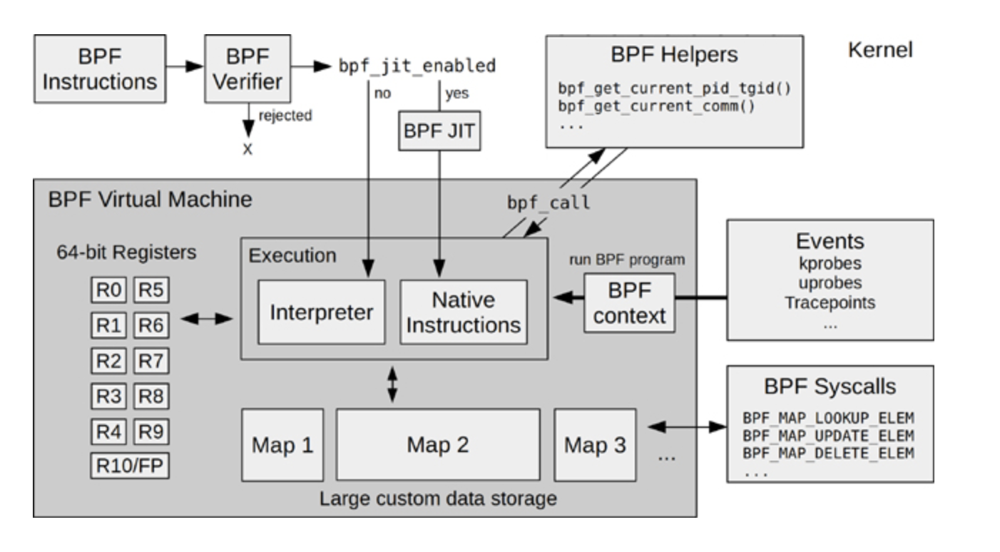
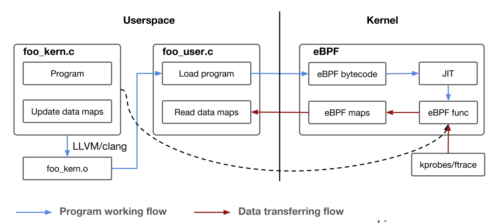

- 00 开篇词 一个态度两个步骤，成为容器实战高手.md.html
- 01 认识容器：容器的基本操作和实现原理.md.html
- 02 理解进程（1）：为什么我在容器中不能kill 1号进程？.md.html
- 03 理解进程（2）：为什么我的容器里有这么多僵尸进程？.md.html
- 04 理解进程（3）：为什么我在容器中的进程被强制杀死了？.md.html
- 05 容器CPU（1）：怎么限制容器的CPU使用？.md.html
- 06 容器CPU（2）：如何正确地拿到容器CPU的开销？.md.html
- 07 Load Average：加了CPU Cgroup限制，为什么我的容器还是很慢？.md.html
- 08 容器内存：我的容器为什么被杀了？.md.html
- 09 Page Cache：为什么我的容器内存使用量总是在临界点.md.html
- 10 Swap：容器可以使用Swap空间吗？.md.html
- 11 容器文件系统：我在容器中读写文件怎么变慢了.md.html
- 12 容器文件Quota：容器为什么把宿主机的磁盘写满了？.md.html
- 13 容器磁盘限速：我的容器里磁盘读写为什么不稳定.md.html
- 14 容器中的内存与IO：容器写文件的延时为什么波动很大？.md.html
- 15 容器网络：我修改了procsysnet下的参数，为什么在容器中不起效？.md.html
- 16 容器网络配置（1）：容器网络不通了要怎么调试.md.html
- 17 容器网络配置（2）：容器网络延时要比宿主机上的高吗.md.html
- 18 容器网络配置（3）：容器中的网络乱序包怎么这么高？.md.html
- 19 容器安全（1）：我的容器真的需要privileged权限吗.md.html
- 20 容器安全（2）：在容器中，我不以root用户来运行程序可以吗？.md.html
- 加餐01 案例分析：怎么解决海量IPVS规则带来的网络延时抖动问题？.md.html
- 加餐02 理解perf：怎么用perf聚焦热点函数？.md.html
- 加餐03 理解ftrace（1）：怎么应用ftrace查看长延时内核函数？.md.html
- 加餐04 理解ftrace（2）：怎么理解ftrace背后的技术tracepoint和kprobe？.md.html
- 加餐05 eBPF：怎么更加深入地查看内核中的函数？.md.html
- 加餐06 BCC：入门eBPF的前端工具.md.html
- 加餐福利 课后思考题答案合集.md.html
- 结束语 跳出舒适区，突破思考的惰性.md.html
加餐05 eBPF：怎么更加深入地查看内核中的函数？
你好，我是程远。
今天这一讲，我们聊一聊 eBPF。在我们专题加餐第一讲的分析案例时就说过，当我们碰到网络延时问题，在毫无头绪的情况下，就是依靠了我们自己写的一个 eBPF 工具，找到了问题的突破口。
由此可见，eBPF 在内核问题追踪上的重要性是不言而喻的。那什么是 eBPF，它的工作原理是怎么样，它的编程模型又是怎样的呢？
在这一讲里，我们就来一起看看这几个问题。
eBPF 的概念
eBPF，它的全称是“Extended Berkeley Packet Filter”。从名字看，你可能会觉奇怪，似乎它就是一个用来做网络数据包过滤的模块。
其实这么想也没有错，eBPF 的概念最早源自于 BSD 操作系统中的 BPF（Berkeley Packet Filter），1992 伯克利实验室的一篇论文 “The BSD Packet Filter: A New Architecture for User-level Packet Capture”。这篇论文描述了，BPF 是如何更加高效灵活地从操作系统内核中抓取网络数据包的。
我们很熟悉的 tcpdump 工具，它就是利用了 BPF 的技术来抓取 Unix 操作系统节点上的网络包。Linux 系统中也沿用了 BPF 的技术。
那 BPF 是怎样从内核中抓取数据包的呢？我借用 BPF 论文中的图例来解释一下：

结合这张图，我们一起看看 BPF 实现有哪些特点。
第一，内核中实现了一个虚拟机，用户态程序通过系统调用，把数据包过滤代码载入到个内核态虚拟机中运行，这样就实现了内核态对数据包的过滤。这一块对应图中灰色的大方块，也就是 BPF 的核心。
第二，BPF 模块和网络协议栈代码是相互独立的，BPF 只是通过简单的几个 hook 点，就能从协议栈中抓到数据包。内核网络协议代码变化不影响 BPF 的工作，图中右边的“protocol stack”方块就是指内核网络协议栈。
第三，内核中的 BPF filter 模块使用 buffer 与用户态程序进行通讯，把 filter 的结果返回给用户态程序（例如图中的 network monitor），这样就不会产生内核态与用户态的上下文切换（context switch）。
在 BPF 实现的基础上，Linux 在 2014 年内核 3.18 的版本上实现了 eBPF，全名是 Extended BPF，也就是 BPF 的扩展。这个扩展主要做了下面这些改进。
首先，对虚拟机做了增强，扩展了寄存器和指令集的定义，提高了虚拟机的性能，并且可以处理更加复杂的程序。
其次，增加了 eBPF maps，这是一种存储类型，可以保存状态信息，从一个 BPF 事件的处理函数传递给另一个，或者保存一些统计信息，从内核态传递给用户态程序。
最后，eBPF 可以处理更多的内核事件，不再只局限在网络事件上。你可以这样来理解，eBPF 的程序可以在更多内核代码 hook 点上注册了，比如 tracepoints、kprobes 等。
在 Brendan Gregg 写的书《BPF Performance Tools》里有一张 eBPF 的架构图，这张图对 eBPF 内核部分的模块和工作流的描述还是挺完整的，我也推荐你阅读这本书。图书的网上预览部分也可以看到这张图，我把它放在这里，你可以先看一下。
这里我想提醒你，我们在后面介绍例子程序的时候，你可以回头再来看看这张图，那时你会更深刻地理解这张图里的模块。

当 BPF 增强为 eBPF 之后， 它的应用范围自然也变广了。从单纯的网络包抓取，扩展到了下面的几个领域：
网络领域，内核态网络包的快速处理和转发，你可以看一下XDP（eXpress Data Path）。
安全领域，通过LSM（Linux Security Module）的 hook 点，eBPF 可以对 Linux 内核做安全监控和访问控制，你可以参考KRSI（Kernel Runtime Security Instrumentation）的文档。
内核追踪 / 调试，eBPF 能通过 tracepoints、kprobes、 perf-events 等 hook 点来追踪和调试内核，这也是我们在调试生产环境中，解决容器相关问题时使用的方法。
eBPF 的编程模型
前面说了很多 eBPF 概念方面的内容，如果你是刚接触 eBPF，也许还不能完全理解。所以接下来，我们看一下 eBPF 编程模型，然后通过一个编程例子，再帮助你理解 eBPF。
eBPF 程序其实也是遵循了一个固定的模式，Daniel Thompson 的“Kernel analysis using eBPF”里的一张图解读得非常好，它很清楚地说明了 eBPF 的程序怎么编译、加载和运行的。

结合这张图，我们一起分析一下 eBPF 的运行原理。
一个 eBPF 的程序分为两部分，第一部分是内核态的代码，也就是图中的 foo_kern.c，这部分的代码之后会在内核 eBPF 的虚拟机中执行。第二部分是用户态的代码，对应图中的 foo_user.c。它的主要功能是负责加载内核态的代码，以及在内核态代码运行后通过 eBPF maps 从内核中读取数据。
然后我们看看 eBPF 内核态程序的编译，因为内核部分的代码需要被编译成 eBPF bytecode 二进制文件，也就是 eBPF 的虚拟机指令，而在 Linux 里，最常用的 GCC 编译器不支持生成 eBPF bytecode，所以这里必须要用 Clang/LLVM 来编译，编译后的文件就是 foo_kern.o。
foo_user.c 编译链接后就会生成一个普通的用户态程序，它会通过 bpf() 系统调用做两件事：第一是去加载 eBPF bytecode 文件 foo_kern.o，使 foo_kern.o 这个 eBPF bytecode 在内核 eBPF 的虚拟机中运行；第二是创建 eBPF maps，用于内核态与用户态的通讯。
接下来，在内核态，eBPF bytecode 会被加载到 eBPF 内核虚拟机中，这里你可以参考一下前面的 eBPF 架构图。
执行 BPF 程序之前，BPF Verifier 先要对 eBPF bytecode 进行很严格的指令检查。检查通过之后，再通过 JIT（Just In Time）编译成宿主机上的本地指令。
编译成本地指令之后，eBPF 程序就可以在内核中运行了，比如挂载到 tracepoints hook 点，或者用 kprobes 来对内核函数做分析，然后把得到的数据存储到 eBPF maps 中，这样 foo_user 这个用户态程序就可以读到数据了。
我们学习 eBPF 的编程的时候，可以从编译和执行 Linux 内核中 samples/bpf 目录下的例子开始。在这个目录下的例子里，包含了 eBPF 各种使用场景。每个例子都有两个.c 文件，命名规则都是 xxx_kern.c 和 xxx_user.c ，编译和运行的方式就和我们刚才讲的一样。
本来我想拿 samples/bpf 目录下的一个例子来具体说明的，不过后来我在 github 上看到了一个更好的例子，它就是ebpf-kill-example。下面，我就用这个例子来给你讲一讲，如何编写 eBPF 程序，以及 eBPF 代码需要怎么编译与运行。
我们先用 git clone 取一下代码：
# git clone https://github.com/niclashedam/ebpf-kill-example
# cd ebpf-kill-example/
# ls
docs img LICENSE Makefile README.md src test
这里你可以先看一下 Makefile，请注意编译 eBPF 程序需要 Clang/LLVM，以及由 Linux 内核源代码里的 tools/lib/bpf 中生成的 libbpf.so 库和相关的头文件。如果你的 OS 是 Ubuntu，可以运行make deps;make kernel-src这个命令，准备好编译的环境。
# cat Makefile
…
deps:
sudo apt update
sudo apt install -y build-essential git make gcc clang libelf-dev gcc-multilib
kernel-src:
git clone --depth 1 --single-branch --branch ${LINUX_VERSION} https://github.com/torvalds/linux.git kernel-src
cd kernel-src/tools/lib/bpf && make && make install prefix=../../../../
…
完成上面的步骤后，在 src/ 目录下，我们可以看到两个文件，分别是 bpf_program.c 和 loader.c。
在这个例子里，bpf_program.c 对应前面说的 foo_kern.c 文件，也就是说 eBPF 内核态的代码在 bpf_program.c 里面。而 loader.c 就是 eBPF 用户态的代码，它主要负责把 eBPF bytecode 加载到内核中，并且通过 eBPF Maps 读取内核中返回的数据。
# ls src/
bpf_program.c loader.c
我们先看一下 bpf_program.c 中的内容：
# cat src/bpf_program.c
#include <linux/bpf.h>
#include <stdlib.h>
#include "bpf_helpers.h"
//这里定义了一个eBPF Maps
//Data in this map is accessible in user-space
struct bpf_map_def SEC("maps") kill_map = {
.type = BPF_MAP_TYPE_HASH,
.key_size = sizeof(long),
.value_size = sizeof(char),
.max_entries = 64,
};
// This is the tracepoint arguments of the kill functions
// /sys/kernel/debug/tracing/events/syscalls/sys_enter_kill/format
struct syscalls_enter_kill_args {
long long pad;
long syscall_nr;
long pid;
long sig;
};
// 这里定义了BPF_PROG_TYPE_TRACEPOINT类型的BPF Program
SEC("tracepoint/syscalls/sys_enter_kill")
int bpf_prog(struct syscalls_enter_kill_args *ctx) {
// Ignore normal program terminations
if(ctx->sig != 9) return 0;
// We can call glibc functions in eBPF
long key = labs(ctx->pid);
int val = 1;
// Mark the PID as killed in the map
bpf_map_update_elem(&kill_map, &key, &val, BPF_NOEXIST);
return 0;
}
// All eBPF programs must be GPL licensed
char _license[] SEC("license") = "GPL";
在这一小段代码中包含了 eBPF 代码最重要的三个要素，分别是：
BPF Program Types
BPF Maps
BPF Helpers
“BPF Program Types”定义了函数在 eBPF 内核态的类型，这个类型决定了这个函数会在内核中的哪个 hook 点执行，同时也决定了函数的输入参数的类型。在内核代码bpf_prog_type的枚举定义里，你可以看到 eBPF 支持的所有“BPF Program Types”。
比如在这个例子里的函数 bpf_prog()，通过 SEC() 这个宏，我们可以知道它的类型是 BPF_PROG_TYPE_TRACEPOINT，并且它注册在 syscalls subsystem 下的 sys_enter_kill 这个 tracepoint 上。
既然我们知道了具体的 tracepoint，那么这个 tracepoint 的注册函数的输入参数也就固定了。在这里，我们就把参数组织到 syscalls_enter_kill_args{}这个结构里，里面最主要的信息就是 kill() 系统调用中，输入信号的编号 sig 和信号发送目标进程的 pid。
“BPF Maps”定义了 key/value 对的一个存储结构，它用于 eBPF 内核态程序之间，或者内核态程序与用户态程序之间的数据通讯。eBPF 中定义了不同类型的 Maps，在内核代码bpf_map_type的枚举定义中，你可以看到完整的定义。
在这个例子里，定义的 kill_map 是 BPF_MAP_TYPE_HASH 类型，这里也用到了 SEC() 这个宏，等会儿我们再解释，先看其他的。
kill_map 是 HASH Maps 里的一个 key，它是一个 long 数据类型，value 是一个 char 字节。bpf_prog() 函数在系统调用 kill() 的 tracepoint 上运行，可以得到目标进程的 pid 参数，Maps 里的 key 值就是这个 pid 参数来赋值的，而 val 只是简单赋值为 1。
然后，这段程序调用了一个函数 bpf_map_update_elem()，把这组新的 key/value 对写入了到 kill_map 中。这个函数 bpf_map_update_elem() 就是我们要说的第三个要素 BPF Helpers。
我们再看一下“BPF Helpers”，它定义了一组可以在 eBPF 内核态程序中调用的函数。
尽管 eBPF 程序在内核态运行，但是跟 kernel module 不一样，eBPF 程序不能调用普通内核 export 出来的函数，而是只能调用在内核中为 eBPF 事先定义好的一些接口函数。这些接口函数叫作 BPF Helpers，具体有哪些你可以在”Linux manual page”中查看。
看明白这段代码之后，我们就可以运行 make build 命令，把 C 代码编译成 eBPF bytecode 了。这里生成了 src/bpf_program.o 这个文件：
# make build
clang -O2 -target bpf -c src/bpf_program.c -Ikernel-src/tools/testing/selftests/bpf -Ikernel-src/tools/lib/bpf -o src/bpf_program.o
# ls -l src/bpf_program.o
-rw-r----- 1 root root 1128 Jan 24 00:50 src/bpf_program.o
接下来，你可以用 LLVM 工具来看一下 eBPF bytecode 里的内容，这样做可以确认下面两点。
编译生成了 BPF 虚拟机的汇编指令，而不是 x86 的指令。
在代码中用 SEC 宏添加的“BPF Program Types”和“BPF Maps”信息也在后面的 section 里。
查看 eBPF bytecode 信息的操作如下：
### 用objdump来查看bpf_program.o里的汇编指令
# llvm-objdump -D src/bpf_program.o
…
Disassembly of section tracepoint/syscalls/sys_enter_kill:
0000000000000000 <bpf_prog>:
0: 79 12 18 00 00 00 00 00 r2 = *(u64 *)(r1 + 24)
1: 55 02 10 00 09 00 00 00 if r2 != 9 goto +16 <LBB0_2>
2: 79 11 10 00 00 00 00 00 r1 = *(u64 *)(r1 + 16)
3: bf 12 00 00 00 00 00 00 r2 = r1
4: c7 02 00 00 3f 00 00 00 r2 s>>= 63
5: 0f 21 00 00 00 00 00 00 r1 += r2
6: af 21 00 00 00 00 00 00 r1 ^= r2
7: 7b 1a f8 ff 00 00 00 00 *(u64 *)(r10 - 8) = r1
8: b7 01 00 00 01 00 00 00 r1 = 1
9: 63 1a f4 ff 00 00 00 00 *(u32 *)(r10 - 12) = r1
10: bf a2 00 00 00 00 00 00 r2 = r10
11: 07 02 00 00 f8 ff ff ff r2 += -8
12: bf a3 00 00 00 00 00 00 r3 = r10
13: 07 03 00 00 f4 ff ff ff r3 += -12
14: 18 01 00 00 00 00 00 00 00 00 00 00 00 00 00 00 r1 = 0 ll
16: b7 04 00 00 01 00 00 00 r4 = 1
17: 85 00 00 00 02 00 00 00 call 2
…
### 用readelf读到bpf_program.o中的ELF section信息。
# llvm-readelf -sections src/bpf_program.o
There are 9 section headers, starting at offset 0x228:
Section Headers:
[Nr] Name Type Address Off Size ES Flg Lk Inf Al
…
[ 3] tracepoint/syscalls/sys_enter_kill PROGBITS 0000000000000000 000040 0000a0 00 AX 0 0 8
[ 4] .reltracepoint/syscalls/sys_enter_kill REL 0000000000000000 000190 000010 10 8 3 8
[ 5] maps PROGBITS 0000000000000000 0000e0 00001c 00 WA 0 0 4
好了，看完了 eBPF 程序的内核态部分，我们再来看看它的用户态部分 loader.c：
# cat src/loader.c
#include "bpf_load.h"
#include <unistd.h>
#include <stdio.h>
int main(int argc, char **argv) {
// Load our newly compiled eBPF program
if (load_bpf_file("src/bpf_program.o") != 0) {
printf("The kernel didn't load the BPF program\n");
return -1;
}
printf("eBPF will listen to force kills for the next 30 seconds!\n");
sleep(30);
// map_fd is a global variable containing all eBPF map file descriptors
int fd = map_fd[0], val;
long key = -1, prev_key;
// Iterate over all keys in the map
while(bpf_map_get_next_key(fd, &prev_key, &key) == 0) {
printf("%ld was forcefully killed!\n", key);
prev_key = key;
}
return 0;
}
这部分的代码其实也很简单，主要就是做了两件事：
通过执行 load_bpf_file() 函数，加载内核态代码生成的 eBPF bytecode，也就是编译后得到的文件“src/bpf_program.o”。
等待 30 秒钟后，从 BPF Maps 读取 key/value 对里的值。这里的值就是前面内核态的函数 bpf_prog()，在 kill() 系统调用的 tracepoint 上执行这个函数以后，写入到 BPF Maps 里的值。
至于读取 BPF Maps 的部分，就不需要太多的解释了，这里我们主要看一下 load_bpf_file() 这个函数，load_bpf_file() 是 Linux 内核代码 samples/bpf/bpf_load.c 里封装的一个函数。
这个函数可以读取 eBPF bytecode 中的信息，然后决定如何在内核中加载 BPF Program，以及创建 BPF Maps。这里用到的都是bpf()这个系统调用，具体的代码你可以去看一下内核中bpf_load.c和bpf.c这两个文件。
理解了用户态的 load.c 这段代码后，我们最后编译一下，就生成了用户态的程序 ebpf-kill-example：
# make
clang -O2 -target bpf -c src/bpf_program.c -Ikernel-src/tools/testing/selftests/bpf -Ikernel-src/tools/lib/bpf -o src/bpf_program.o
clang -O2 -o src/ebpf-kill-example -lelf -Ikernel-src/samples/bpf -Ikernel-src/tools/lib -Ikernel-src/tools/perf -Ikernel-src/tools/include -Llib64 -lbpf \
kernel-src/samples/bpf/bpf_load.c -DHAVE_ATTR_TEST=0 src/loader.c
# ls -l src/ebpf-kill-example
-rwxr-x--- 1 root root 23400 Jan 24 01:28 src/ebpf-kill-example
你可以运行一下这个程序，如果在 30 秒以内有别的程序执行了 kill -9
# LD_LIBRARY_PATH=lib64/:$LD_LIBRARY_PATH ./src/ebpf-kill-example &
[1] 1963961
# eBPF will listen to force kills for the next 30 seconds!
# kill -9 1
# 1 was forcefully killed!
重点小结
今天我们一起学习了 eBPF，接下来我给你总结一下重点。
eBPF 对早年的 BPF 技术做了增强之后，为 Linux 网络， Linux 安全以及 Linux 内核的调试和跟踪这三个领域提供了强大的扩展接口。
虽然整个 eBPF 技术是很复杂的，不过对于用户编写 eBPF 的程序，还是有一个固定的模式。
eBPF 的程序都分为两部分，一是内核态的代码最后会被编译成 eBPF bytecode，二是用户态代码，它主要是负责加载 eBPF bytecode，并且通过 eBPF Maps 与内核态代码通讯。
这里我们重点要掌握 eBPF 程序里的三个要素，eBPF Program Types，eBPF Maps 和 eBPF Helpers。
eBPF Program Types 可以定义函数在 eBPF 内核态的类型。eBPF Maps 定义了 key/value 对的存储结构，搭建了 eBPF Program 之间以及用户态和内核态之间的数据交换的桥梁。eBPF Helpers 是内核事先定义好了接口函数，方便 eBPF 程序调用这些函数。
理解了这些概念后，你可以开始动手编写 eBPF 的程序了。不过，eBPF 程序的调试并不方便，基本只能依靠 bpf_trace_printk()，同时也需要我们熟悉 eBPF 虚拟机的汇编指令。这些就需要你在实际的操作中，不断去积累经验了。
思考题
请你在ebpf-kill-example 这个例子的基础上，做一下修改，让用户态程序也能把调用 kill() 函数的进程所对应的进程号打印出来。
欢迎你在留言区记录你的思考或疑问。如果这一讲让你有所收获，也欢迎转发给你的朋友，同事，跟他一起学习进步。